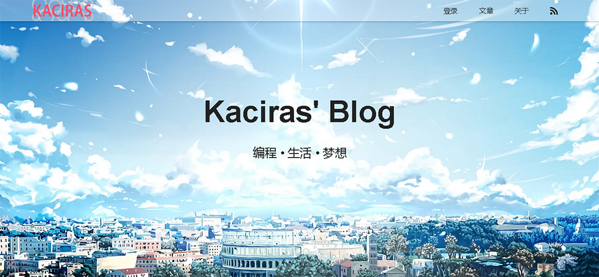

项目展示
编织有艺术感的代码
NodeJS
Webpack
PWA
Vue.js
JAVA
TypeScript
Python
Spring Boot
Redis
MySQL
Nginx
Debian

- 独立完成整个项目，包括前端、后端、运维部署
- 使用 NodeJS + Koa.js + TypeScript 构建前端服务器，具有良好的性能和扩展性
-
手动配置Webpack，并编写加载器和插件
，提供了资源压缩，图片裁剪、优化、生成额外的WebP格式，SSR热重载等丰富的功能
-
使用 grid布局、transition、transform 等较新的CSS功能，以少量的代码实现了美观的布局和效果
- 响应式布局，能够适配各种宽度的屏幕
-
实现了图片上传后自动优化、压缩，转码为WebP格式的功能
，节约了79.7%的流量（根据文章里的图片计算）
-
支持PWA技术
，使用ServiceWorker提升加载速度，支持离线访问，还可以添加到手机桌面
-
支持Vue的服务端渲染技术（SSR）
，让动态内容同样被收录，并提升首屏速度
-
使用Vue组件化开发模式，将常用的代码封装为通用的组件，使用StoryBook对组件进行独立地开发和展示
- 大量使用最新的ES特性，如 Optional Chain、字符串模板、async/await等，简化了代码、避免回调地狱
- 拥有自己编写的 Markdown 编辑器用来写文章，支持LaTeX、上传图片和视频